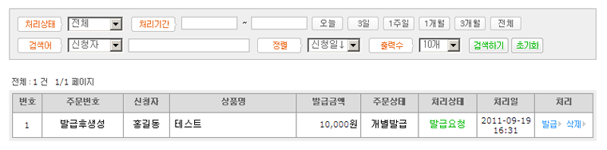

01. 현금영수증설정
A. 전자결제대행사 : 설정된 전자결제대행사의 현금영수증을 사용하며 별도 계약이 필요없습니다.
B. 발급 사용여부 : 현금영수증 사용유무를 선택 하시면 됩니다.
C. 발급 방법 : 주문 후 자동으로 발급할건지 관리자가 수동으로 발급 할건지 선택 하시면 됩니다.
D. 신청기간제한 : 수동 발급시 발급가능한 기간을 입력 하시면 됩니다.
E. 사업자형태 : 일반과세업자인지 면세/간의과세업자인지 선택 하시면 됩니다.
! 쇼핑몰 환경설정 > 사업자정보&기본정보에서 설정한 정보를 이용해 현금영수증이 발급됩니다.
! 설정된 전자결제대행사의 현금영수증을 사용하며 별도 계약이 필요없습니다.
! 구매자가 주문서/마이페이지에서 영수증 발급을 신청하면 관리자가 발급합니다.
! 자동발급은 구매자가 현금영수증을 신청하면 입금확인/취소완료 단계에서 자동으로 발급/취소됩니다.
! 수동발급은 구매자가 신청한 현금 영수증을 관리자가 건별로 발급버튼을 눌러서 발급합니다.
! 일반 과세사업자는 판매물품에 부가세가 있고 현금영수증에 공급가액,부가세가 분리되어 국세청통보 됩니다.
! 면세/간이사업자는 판매물품에 부가세가 없고 현금영수증에 공급가액 = 합계금액 (부가세없음)으로 국세청통보 됩니다.
02. 현금영수증개별발급
A. 전자결제대행사 : 설정된 전자결제대행사가 나타 납니다.
B. 발급 용도 : 소득공제용, 지출증빙용 중 선택 하시면 됩니다.
C. 신청자명 : 신청자명을 입력 하시면 됩니다.
D. 연락처 : 신청자의 연락처를 입력 하시면 됩니다.
E. 이메일 : 신청자의 이메일 주소를 일력 하시면 됩니다.
F. 상품명 : 상품명을 입력 하시면 됩니다.
G. 신청금액 : 총 상품가격을 입력 하시면 됩니다. (일반과세업자의 경우는 부가세 10%를 포함하여 신고됩니다.)
H. 인증 종류 : 핸드폰번호, 주민등록번호, 사업자등록번호 중 선택 하시고 인증 번호를 입력 하시면 됩니다.
! 쇼핑몰 환경설정 > 사업자정보&기본정보에서 설정한 정보를 이용해 현금영수증이 발급됩니다.
! 무통장 외 결제수단으로 결제를 했거나 기타 오프라인 판매에 대해서 현금영수증 발급이 가능합니다.
! 현금영수증 발급시 국세청에 통보되기 때문에 정확한 자료를 입력 하셔야 합니다.
! 개별발급을 하면 발급요청으로 처리됨으로 발급 후 현금연수증발급/조회 에서 실제 발급을 하셔야 합니다.
! 개인 정보 보호를 위해 되도록이면 "주민등록번호"는 입력을 자제 하시기 바랍니다.
03. 현금영수증발급/조회
A. 주문번호 : 상품구매시 주문반호가 나타 납니다.(개별발급일 경우 발급 후 생성됩니다)
B. 신청자 : 신청자명이 나타 납니다.
C. 상품명 : 구매한 상품명이 나타 납니다.
D. 발급금액 : 발급신청한 금액이 나타 납니다.
E. 주문상태 : 현재 주문상태가 나타 납니다..
F. 처리상태 : 처리상태가(발급요청, 발급완료, 발급취소) 나타 납니다.
G. 처리일 : 처리일이 나타 납니다.
H. 처리 : 발급, 완료, 취소, 삭제 처리를 하실 수 있습니다.
